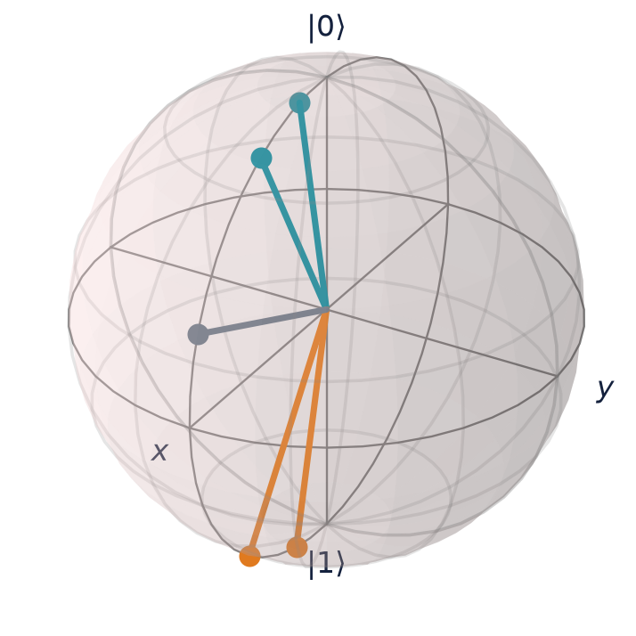
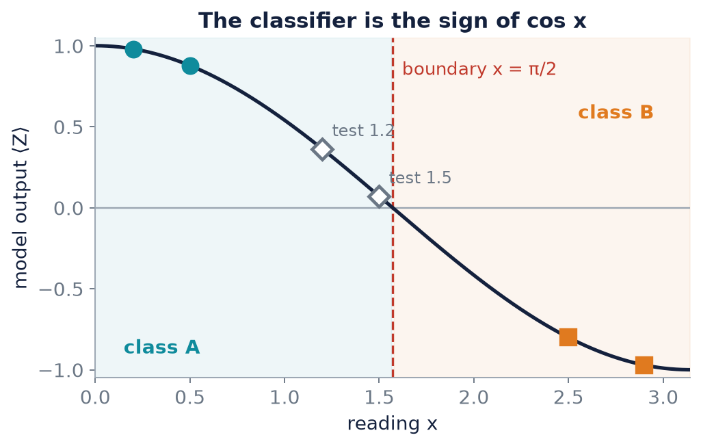
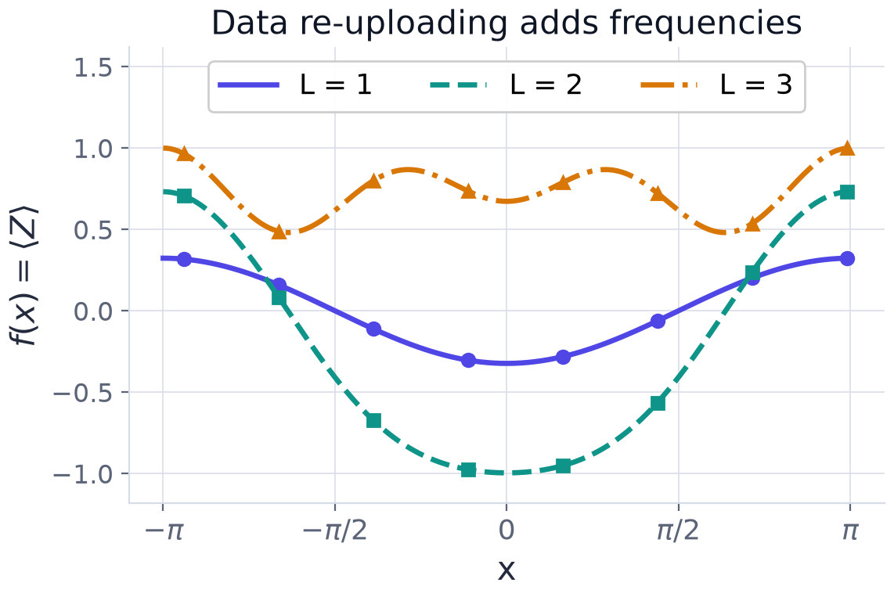
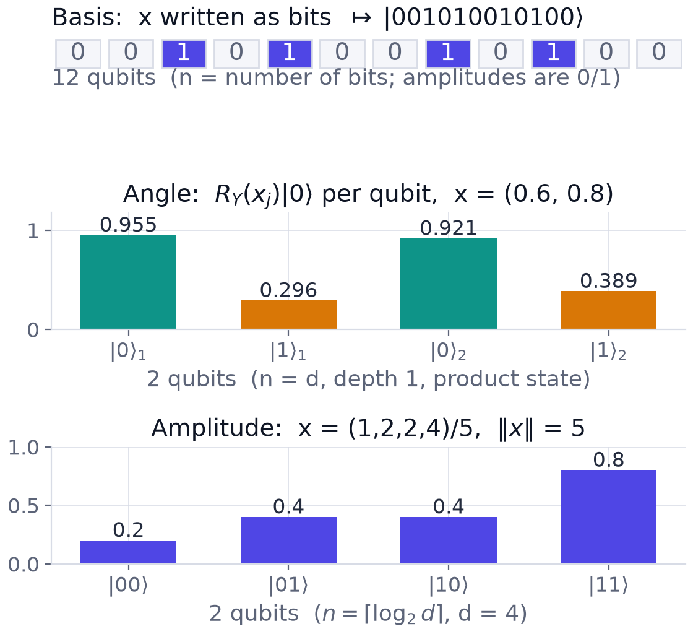
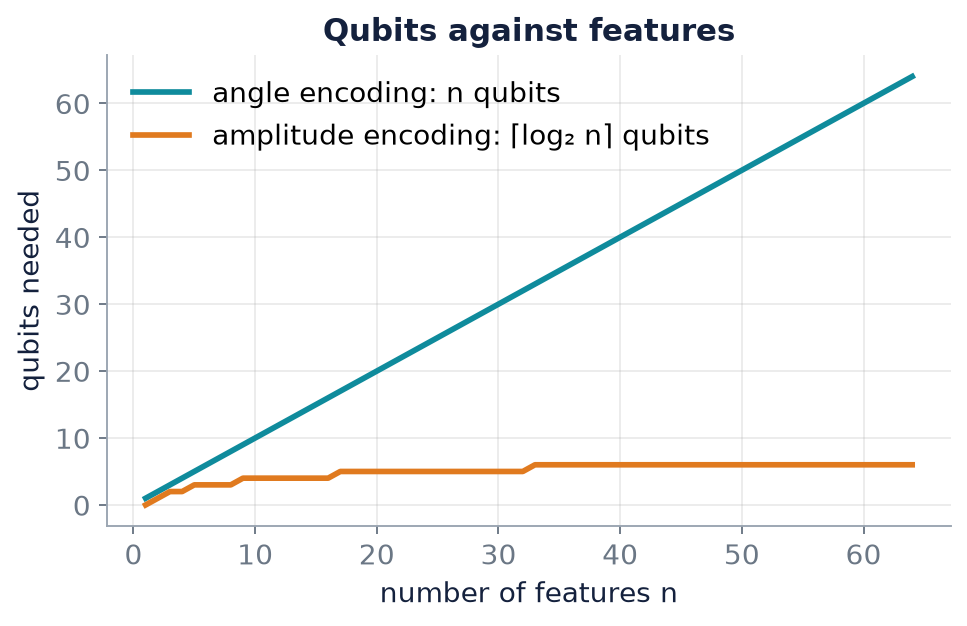

Chapter 5: Encoding Data into Quantum States¶
A quantum circuit does not accept an array. It acts on states. So before any quantum model can look at a data point \(x\in\mathbb{R}^d\), the point must be turned into a state by some data-dependent circuit applied to the blank register. This chapter studies that interface. It argues that the encoding is not preprocessing but the most consequential modelling decision in the whole pipeline, then surveys the five standard encodings: basis, amplitude, angle, entangling (ZZ), and data re-uploading. For each it derives the kernel it induces, its resource cost, and its weakness. Two worked examples close the chapter: the amplitude encoding of a small vector, and a complete one-qubit classifier built on angle encoding.
5.1 The interface problem¶
The input \(x\) must become a state
through a data-dependent unitary \(U_\varphi(x)\). Four facts make this step far more important than it looks.
- It is the feature map. The map \(x\mapsto\lvert\varphi(x)\rangle\) is exactly the \(\phi\) of Chapter 4, with a feature space of dimension \(2^n\).
- It fixes the kernel. The similarity \(k(x,x')=\lvert\langle\varphi(x)\vert\varphi(x')\rangle\rvert^2\) is determined by \(U_\varphi(x)\) alone, before a single parameter has been trained.
- It fixes expressivity. The frequencies in \(x\) that a circuit can represent follow from the encoding generators, not from the depth of the trainable part (Section 5.6).
- So it is a model choice. Treating the encoding as mere preprocessing is the commonest conceptual error in QML.
Everything that follows is a survey of choices for \(U_\varphi(x)\) and their trade-offs.
5.2 Basis encoding¶
Basis encoding sends a bit string \(x\in\{0,1\}^n\) to the computational basis state, \(x\mapsto\lvert x\rangle\). It needs one qubit per bit and only \(X\) gates (an \(X\) wherever the bit is \(1\)). For example the 12-bit string \(001010010100\) becomes the basis state \(\lvert001010010100\rangle\) on twelve qubits.
It is simple and wasteful. \(n\) qubits carry only \(n\) bits. Worse, distinct inputs are mapped to orthogonal states, so the induced kernel is
equal to \(1\) when the inputs agree and \(0\) otherwise. A model that regards nothing as resembling anything else cannot generalise. Real numbers also do not fit: basis encoding is for binary data only.
5.3 Amplitude encoding¶
At the other extreme, amplitude encoding stores a vector \(x\in\mathbb{R}^d\) in the amplitudes of a state:
Each component becomes an amplitude, attached to a basis state. The compression is exponential: \(d=2^{20}\) real features, about a million, fit in \(20\) qubits. But two bills arrive.
- Magnitude is lost. Dividing by \(\lVert x\rVert\) discards the length of \(x\): \(x\) and \(2x\) give the same state. Only the direction survives, unless the norm is padded into an extra component.
- Preparation is costly. Preparing a generic state on \(n\) qubits takes gates growing like \(2^n\), about as many as there are data values. The compression is in storage, not in time, and the saving cancels unless the data has exploitable structure or comes from a QRAM-like oracle.
A compact state is useless if loading it takes exponential time
Amplitude encoding is the headline compact scheme, and the state-preparation cost is exactly where naive claims of exponential speed-up usually break.
Example 5.1: amplitude encoding of a four-component vector
Encode the data vector \(x=(1,2,2,4)\).
(a) How many qubits? (b) Write the encoded state. (c) What is the probability of measuring \(11\)? (d) How many qubits would a 1024-dimensional vector need?
Step 1: qubit count. A \(d=4\) vector fills the amplitudes of a two-qubit register: \(n=\lceil\log_24\rceil=2\).
Step 2: normalisation. \(\lVert x\rVert=\sqrt{1+4+4+16}=\sqrt{25}=5\).
Step 3: encoded state. Divide each component by \(5\) and attach it to a basis state:
Step 4: Born rule. \(P(11)=\left(\tfrac45\right)^2=\tfrac{16}{25}=0.64\).
Step 5: scaling. \(1024=2^{10}\), so \(10\) qubits.
Answer. (a) 2 qubits; (b) as above; (c) \(0.64\); (d) 10 qubits. Remark. The compression in space is exponential, but generic state preparation costs \(O(d)\) gates, so the saving is not free.
Example 5.2: only the direction survives
Take \(x=(3,0,4,0)\). Then \(\lVert x\rVert=\sqrt{9+16}=5\) and \(\lvert\psi\rangle=0.6\lvert00\rangle+0\lvert01\rangle+0.8\lvert10\rangle+0\lvert11\rangle\), with probabilities \((0.36,0,0.64,0)\): four features, two qubits. The vector \(2x=(6,0,8,0)\) gives exactly the same state, so a classifier that sees only \(\lvert\psi\rangle\) cannot tell \(x\) from \(2x\).
5.4 Angle encoding¶
Angle encoding is the pragmatic middle ground and where most people start. Each feature is written into the angle of a single-qubit rotation, giving a depth-one product-state encoding of \(x\in\mathbb{R}^d\) on \(n=d\) qubits:
On the Bloch sphere (Chapter 2) one feature is the polar angle: small \(x\) sits near \(\lvert0\rangle\), and \(x=\pi\) is \(\lvert1\rangle\).
The induced kernel¶
The overlap of two product states is the product of the per-qubit overlaps. For one qubit,
by the identity \(\cos A\cos B+\sin A\sin B=\cos(A-B)\). Taking the product over qubits and squaring,
a product of one cosine similarity per feature.
Strengths and cautions¶
The circuit is shallow and hardware-friendly: \(d\) parallel single-qubit gates and no entanglement. But the state is a product state, hence classically simulable, so entangling layers must follow if anything beyond classical power is wanted. And two practical points matter.
- Periodicity. Rotations are \(2\pi\)-periodic, so \(x\) and \(x+2\pi\) give the same state (up to a global sign). Features must be scaled into a window such as \([0,\pi]\) to avoid aliasing different values onto one.
- Scaling is a hyperparameter. If features are multiplied by a scale \(s\) before encoding, the kernel becomes \(\prod_j\cos^2\big(s(x_j-x_j')/2\big)\): \(s\) is the kernel bandwidth. Too small and all states overlap, so everything looks alike; too large and the kernel tends to \(\delta_{xx'}\), so nothing does.

Example 5.3: a one-qubit angle-encoded classifier
A sensor gives one reading \(x\) per sample. Each reading is encoded as \(\lvert\psi(x)\rangle=R_Y(x)\lvert0\rangle\), and the sample is classed A if \(\langle Z\rangle>0\) and B if \(\langle Z\rangle<0\). The training data are \((0.2,\text{A})\), \((0.5,\text{A})\), \((2.5,\text{B})\), \((2.9,\text{B})\), and the test readings are \(x=1.2\) and \(x=1.5\).
(a) Find \(P(0)\), \(P(1)\) and \(\langle Z\rangle\) for each training reading and check the rule.
Step 1, encode. For \(x=0.2\): \(\lvert\psi\rangle=\cos(0.1)\lvert0\rangle+\sin(0.1)\lvert1\rangle=0.9950\lvert0\rangle+0.0998\lvert1\rangle\), so \(P(0)=0.9950^2=0.9900\) and \(P(1)=0.0998^2=0.0100\).
Step 2, the output. \(\langle Z\rangle=P(0)-P(1)=\cos^2\frac x2-\sin^2\frac x2=\cos x\). For \(x=0.2\) this is \(0.9900-0.0100=0.9801=\cos0.2\). The full table:
| \(x\) | \(P(0)\) | \(P(1)\) | \(\langle Z\rangle\) | class |
|---|---|---|---|---|
| 0.2 | 0.9900 | 0.0100 | +0.9801 | A, correct |
| 0.5 | 0.9388 | 0.0612 | +0.8776 | A, correct |
| 2.5 | 0.0994 | 0.9006 | -0.8011 | B, correct |
| 2.9 | 0.0145 | 0.9855 | -0.9710 | B, correct |
All four training readings are classified correctly.
(b) Classify the test readings. Step 3, the boundary. \(\langle Z\rangle>0\iff\cos x>0\iff x<\pi/2\approx1.571\). The circuit is a threshold classifier with its boundary at \(\pi/2\).
| test \(x\) | \(P(0)\) | \(\langle Z\rangle=\cos x\) | class |
|---|---|---|---|
| 1.2 | 0.6812 | +0.3624 | A |
| 1.5 | 0.5354 | +0.0707 | A |
Both are class A, but \(x=1.5\) lies only \(0.07\) from the boundary.
(c) With 1000 shots, how confident is each prediction? Step 4. The standard error is \(\sigma=\sqrt{(1-\langle Z\rangle^2)/M}\) with \(M=1000\).
For \(x=1.2\): \(\sigma=\sqrt{0.8687/1000}=0.0295\), so \(0.3624\) is \(12.3\sigma\) above zero and the sign is certain. For \(x=1.5\): \(\sigma=\sqrt{0.9950/1000}=0.0315\), so \(0.0707\) is only \(2.2\sigma\) above zero: roughly a 1% chance that a 1000-shot run reports class B. In one simulated run of 1000 shots, \(x=1.2\) gave \(689\) zeros (estimate \(\langle Z\rangle=+0.378\), \(12.9\) standard errors from zero) and \(x=1.5\) gave \(537\) zeros (estimate \(+0.074\), \(2.3\) standard errors).
Answer. All training readings are classified correctly by the boundary \(x=\pi/2\). Both test readings are class A: \(x=1.2\) with certainty at 1000 shots, \(x=1.5\) only marginally. Near a boundary, precision has to be bought with shots.

The numbers in the example can be reproduced with the toolkit of Section 3.7.
train = [(0.2, "A"), (0.5, "A"), (2.5, "B"), (2.9, "B")]
test = [1.2, 1.5]
def encode(x): # one qubit, one rotation
return ry(x) @ ket0
print(" x P(0) P(1) <Z> class")
for x, label in train + [(t, "?") for t in test]:
psi = encode(x)
p0, p1 = probs(psi)
ez = expval(psi, Z)
print(f"{x:5.1f} {p0:.4f} {p1:.4f} {ez:+.4f} {'A' if ez > 0 else 'B'}")
# what a device gives: a finite number of shots
rng = np.random.default_rng(1456) # any seed; other seeds give other counts
M = 1000
for x in test:
n0 = sample(encode(x), M, rng)[0]
ez_hat = (2 * n0 - M) / M
se = np.sqrt((1 - ez_hat**2) / M)
print(f"x={x}: zeros={n0}, estimate {ez_hat:+.3f}, {abs(ez_hat)/se:.1f} std. errors from 0")
x P(0) P(1) <Z> class
0.2 0.9900 0.0100 +0.9801 A
0.5 0.9388 0.0612 +0.8776 A
2.5 0.0994 0.9006 -0.8011 B
2.9 0.0145 0.9855 -0.9710 B
1.2 0.6812 0.3188 +0.3624 A
1.5 0.5354 0.4646 +0.0707 A
x=1.2: zeros=689, estimate +0.378, 12.9 std. errors from 0
x=1.5: zeros=537, estimate +0.074, 2.3 std. errors from 0
The exact table is fixed by the mathematics. The last two lines are one random draw of 1000 shots (the counts quoted in the example); a different seed gives different counts, scattered about the expected \(681\) and \(535\) zeros as the standard error predicts.
5.5 Beyond product states: higher-order and entangling feature maps¶
To leave the classically simulable product regime, interleave Hadamards with data-dependent multi-qubit phases. The ZZ feature map applies, for \(r\) repetitions,
where \(S\) ranges over subsets of qubits, typically with \(\lvert S\rvert\le2\). The standard choice is \(\varphi_{\{j\}}(x)=x_j\) and \(\varphi_{\{j,k\}}(x)=(\pi-x_j)(\pi-x_k)\), which gives explicit pairwise interactions between features. For two features and one repetition the circuit is: a Hadamard on each qubit; a phase \(P(2x_j)\) on qubit \(j\); then a phase \(P\big(2(\pi-x_1)(\pi-x_2)\big)\) on the second qubit sandwiched between two CNOTs.
q0: ──H──P(2·x1)──■───────────────────────────────■──
│ │
q1: ──H──P(2·x2)──X──P(2·(π−x1)·(π−x2))───────────X──
(Sign conventions for the phase gate differ between texts; the kernel it induces is the same.) Step three puts a product of the two features into the state, so the circuit itself computes a nonlinear function of the data. Each ZZ phase is a CNOT-rotation-CNOT sandwich, so depth grows with the number of interacting pairs, and repeating the block \(r\) times deepens the map and enriches the induced kernel.
Hardness is not advantage; elaborate is not better
Havlíček and co-authors (2019) argue that overlaps of such states are conjectured hard to estimate classically, because a related circuit family would collapse the polynomial hierarchy if it could be simulated efficiently. This concerns simulation of the circuit family, not a proven learning separation on real data: hardness of the kernel is necessary but not sufficient for a learning advantage. Deeper maps also concentrate the kernel (Chapter 8), so more repetitions can hurt. Chapter 8 shows a ZZ map scoring below a coin flip on a real dataset where the plain angle map scores 100%.
5.6 Data re-uploading and the Fourier picture¶
Every scheme so far encodes the data once and then processes it. Data re-uploading asks, why only once? Interleave data layers and parameter layers, feeding \(x\) back in at every layer \(\ell=1,\dots,L\):
This is the quantum analogue of stacking nonlinearities in a neural network. Pérez-Salinas and co-authors (2020) showed that a single-qubit re-uploading circuit with enough layers can approximate any bounded continuous function, in analogy with the classical universal approximation theorem; the rigorous single-qubit proof came in a 2021 follow-up. The reason is the Fourier picture.
Why one upload is a first-order trigonometric model¶
Take a single \(R_Y(x)\) encoding followed by any trainable circuit \(W\) and observable \(O\). Then
On one qubit, \(W^\dagger OW=a_0I+a_xX+a_yY+a_zZ\) for real numbers \(a\) that depend only on \(\theta\). The encoded state \(R_Y(x)\lvert0\rangle\) has expectation values \(\langle X\rangle=\sin x\), \(\langle Y\rangle=0\), \(\langle Z\rangle=\cos x\) (Exercise 2.4; \(\langle Y\rangle=0\) because the amplitudes are real). Hence
a trigonometric polynomial of first order. The parameters set the coefficients; they cannot create \(\cos2x\).
The general statement¶
Each encoding gate \(R_Y(x)=\cos\frac x2I-i\sin\frac x2Y\) has entries built from \(e^{\pm ix/2}\). After \(L\) uploads, each amplitude of the state is a combination of \(e^{i\omega x/2}\) with \(\omega\in\{-L,-L+2,\dots,L\}\), and \(f\), being bilinear in an amplitude and a conjugate amplitude, contains frequencies \(\omega\) in \(\{-L,\dots,L\}\):
The encoding fixes the accessible frequency set \(\Omega\); the parameters only set the coefficients \(c_\omega(\theta)\) (Schuld, Sweke and Meyer, 2021). With Pauli generators, \(L\) layers give access to frequencies up to \(L\). Training cannot create frequencies the encoding omitted. This is the sharpest statement of the theme of this chapter, encoding as inductive bias, and it returns in Chapter 12: an over-expressive encoding with many independent frequencies can interpolate arbitrary labels and overfit.

5.7 Comparing the encodings¶
| Encoding | Qubits | Circuit depth | Notes |
|---|---|---|---|
| Basis | \(n=d\) | \(O(1)\) | Orthogonal states; kernel \(\delta_{xx'}\); no generalisation |
| Amplitude | \(\lceil\log_2d\rceil\) | \(O(2^n)\) generic | Exponentially compact; preparation cost usually dominates |
| Angle | \(n=d\) | \(O(1)\) | Product state, classically simulable; needs feature scaling |
| ZZ feature map | \(n=d\) | \(O(rn^2)\) | Entangling; overlaps conjectured hard; kernel concentrates |
| Re-uploading | 1 to \(d\) | \(O(L)\) | Encoding repeated \(L\) times; frequency support grows with \(L\) |

Read the table as a depth-versus-expressivity trade-off, with hardware noise penalising the lower rows. No row is uniformly best; the right choice depends on data dimension, structure and device quality.

Key idea
The encoding fixes the kernel \(k(x,x')=\lvert\langle\varphi(x)\vert\varphi(x')\rangle\rvert^2\), and the kernel fixes the inductive bias. Choosing \(U_\varphi(x)\) is choosing what the model can learn; training only chooses among what remains. The encoding, not the variational ansatz, is the primary modelling decision.
5.8 Summary¶
Chapter Summary
- A circuit acts on states, so data must be encoded: \(\lvert\varphi(x)\rangle=U_\varphi(x)\lvert0\rangle^{\otimes n}\). The encoding is the feature map, fixes the kernel, fixes expressivity, and is a modelling choice.
- Basis encoding: \(n\) qubits for \(n\) bits, kernel \(\delta_{xx'}\), useless for generalisation.
- Amplitude encoding: \(\lceil\log_2d\rceil\) qubits, exponentially compact; loses the norm of \(x\); generic preparation costs \(O(2^n)\) gates.
- Angle encoding: one \(R_Y(x_j)\) per qubit, kernel \(\prod_j\cos^2\frac{x_j-x_j'}2\); shallow but classically simulable; features must be scaled (periodicity, bandwidth).
- ZZ maps add data-dependent two-qubit phases to leave the product regime; hard to simulate does not mean useful, and deeper maps concentrate the kernel.
- Re-uploading repeats the encoding; a single upload gives \(a_0+a_z\cos x+a_x\sin x\) and \(L\) uploads give frequencies up to \(L\). The encoding sets the frequencies, the parameters the coefficients.
5.9 Exercises¶
Exercise 5.1
Amplitude-encode \(x=(1,1,1,1)\). What are the amplitudes and the measurement probabilities?
Answer
\(\lVert x\rVert=2\), so every amplitude is \(\tfrac12\): \(\lvert\psi\rangle=\tfrac12(\lvert00\rangle+\lvert01\rangle+\lvert10\rangle+\lvert11\rangle)\), and each outcome has probability \(\tfrac14\).
Exercise 5.2
Amplitude-encode the eight-component vector \(x=(1,0,0,0,0,0,0,1)\). How many qubits, and what is the state? Is it entangled?
Answer
\(d=8\) needs \(n=3\) qubits. \(\lVert x\rVert=\sqrt2\), so \(\lvert\psi\rangle=\tfrac1{\sqrt2}(\lvert000\rangle+\lvert111\rangle)\). It is entangled: the same argument as Example 2.2 shows it does not factorise.
Exercise 5.3
How many qubits do angle encoding and amplitude encoding need for \(d=1000\) features? For \(d=2^{20}\)?
Answer
\(d=1000\): angle encoding needs \(1000\) qubits, amplitude encoding \(\lceil\log_21000\rceil=10\). \(d=2^{20}\): angle encoding \(2^{20}\approx10^6\) qubits, amplitude encoding \(20\).
Exercise 5.4
Compute the angle-encoding kernel between \(x=(0.3,1.0)\) and \(x'=(0.5,0.4)\).
Answer
\(k=\cos^2\frac{0.3-0.5}{2}\cdot\cos^2\frac{1.0-0.4}{2}=\cos^2(0.1)\cos^2(0.3)=0.9900\times0.9127\approx0.9036\).
Exercise 5.5
Explain why \(x=0.3\) and \(x'=0.3+2\pi\) give a kernel value of exactly \(1\), and what this implies for preprocessing.
Answer
\(k=\cos^2\frac{2\pi}{2}=\cos^2\pi=1\): the encoded states agree (up to a global sign, which is unobservable). Features that differ by a full period are indistinguishable, so features must be scaled into a window of length at most \(\pi\) (for example \([0,\pi]\)) to avoid aliasing.
Exercise 5.6
(From the worked problem.) How many shots are needed so that the test reading \(x=1.5\) of Example 5.3 is classified with at least \(3\sigma\) of confidence?
Answer
Require \(\langle Z\rangle\ge3\sigma=3\sqrt{(1-\langle Z\rangle^2)/M}\), that is \(M\ge9(1-\langle Z\rangle^2)/\langle Z\rangle^2\). With \(\langle Z\rangle=\cos1.5=0.0707\), \(\langle Z\rangle^2=0.0050\): \(M\ge9(0.9950)/0.0050\approx1790\) shots.
Exercise 5.7
With a scale \(s\) applied to a single feature, \(k(x,x')=\cos^2\big(s(x-x')/2\big)\). At what separation \(\lvert x-x'\rvert\) does the kernel fall to \(\tfrac12\)? What happens as \(s\to0\) and as \(s\to\infty\)?
Answer
\(\cos^2(s\Delta/2)=\tfrac12\) when \(s\Delta/2=\pi/4\), i.e. \(\Delta=\pi/(2s)\). As \(s\to0\), \(k\to1\) for every pair: all states overlap. As \(s\) grows the kernel oscillates ever faster and, for generic pairs, looks like \(\delta_{xx'}\): nothing resembles anything.
Exercise 5.8
How many frequencies (counting positive, negative and zero) can the model \(f(x)\) contain after \(L=2\) uploads of \(R_Y(x)\)?
Answer
Frequencies \(\omega\in\{-2,-1,0,1,2\}\): five. A single upload gives \(\{-1,0,1\}\), that is \(a_0+a_z\cos x+a_x\sin x\).
Exercise 5.9
Why can a basis-encoded kernel not generalise?
Answer
Distinct bit strings map to orthogonal states, so \(k(x,x')=0\) for every \(x\ne x'\): the Gram matrix of distinct training points is the identity. A new point has zero similarity to every training point, so the model has nothing to base a prediction on.